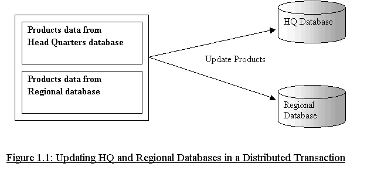
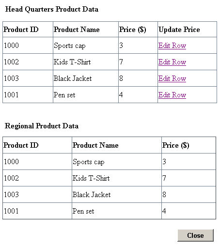
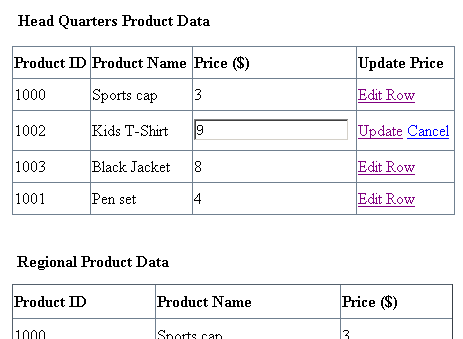

Handling Distributed Transactions using
Microsoft Transaction Server through Oracle Data Provider for .NET (ODP
.NET)
|
The purpose of this sample is to demonstrate Distributed
Transactions using Microsoft Transaction Server through Oracle Data
Provider for .NET(ODP.NET). ODP.NET provides an Oracle Service for using
Microsoft Transaction Server.
|
|
Distributed Transaction is a transaction that includes
one or more statements that update data in two or more
database instances. Oracle's
Two-Phase Commit mechanism guarantees that all database servers
participating in a distributed transaction either commit or rollback the
statements in the transaction.
Note: To keep the sample setup simple, we have simulated
a scenario of two database instances with two schemas in
the same database. Here HQ and Regional are two schemas
within the same database, but being referred as databases
instead of schemas for the sake of reality.
In this sample the two databases that participate in the
distributed transaction are:
1. Headquarters (HQ) Database
2. Regional Database
This sample is an ASP.NET application. On running the
sample, a form displays data from HQ and Regional Products table in a tabular
format, as shown in Figure 1.1. As a business rule, the price of various
products at the Regional database and the HQ database should be
consistent. On clicking the
'Edit Row' link, the HQ Datagrid enters into editable mode.
The user can change the price and on clicking the 'update' link, a distributed
transaction is initiated thereby updating the price for products at the
HQ database and Regional database.

|
| |
When this sample is run, an ASP.NET form with two Datagrids is
displayed as shown in Figure 1.2. The first Datagrid contains data from
Products table of Headquarters(HQ) database, and the second one contains
data from Products table of the Regional database.

Figure
1.2, Screenshot displaying HQ and Regional Datagrids
To edit the price of products in HQ Datagrid, the user can
click on 'EditRow' link for a product. The Datagrid appears in
an editable mode, as shown in Figure 1.3.

Figure 1.3 Screenshot
with HQ Datagrid in editable mode
On Clicking the update link the Products in HQ and Regional
databases gets updated.
-
Microsoft Internet Information Server (IIS) 5.0 or later,
installed on Microsoft Windows 2000 environment with Service Pack 2 or
later.
-
Visual C# installed with MS Development Environment 7.0
version (MS Visual Studio .NET) including MS .NET
Framework 1.0 version
-
Oracle8i Database or later running SQL*Net TCP/IP listener
(can be downloaded here)
-
Oracle Data Provider for .NET (ODP.NET) (can be downloaded here)
with Microsoft Transaction Server Services installed.
Unzip DistributedTransactionSample.zip
using Winzip or command utility to your convinent directory. Extraction
of the zip file results in the creation of DistributedTransactionSample directory.
Connect to your database as any user and run the script DistributedTransaction\Setup\DatabaseSetup.sql
at the SQL prompt.
@<Extract_Dir>\DistributedTransaction\Setup\DatabaseSetup.sql
where <Extract_Dir> is the directory where
you have extracted the sample.
The script creates two database users
- "hqodp" with
password "hqodp"
- "regionodp"
with password "regionodp"
This script creates the PRODUCTS table and populates the table
with data.
-
Ensure that the Database setup has
been completed.
- To publish your project from IIS, a virtual directory needs
to be created. A virtual directory is a shared resource that
is identified by an alias that represents a physical location
on a server. Follow the steps to create a virtual directory
for the sample.
- Go to ControlPanel -> Administrative Tools ->
Internet Service Manger -> Internet Information
Services -> Default Web Site. Right click on Default
Web Site -> New -> Virtual Directory.
- A Virtual Directory Creation Wizard starts.
- Give an alias for Web Virtual Directory. Click Next.
- Enter the location as <Extract_Dir>\DistributedTransaction,
to associate the given alias to this physical location. Click Next.
- Ensure the Read, Run Scripts access permission
are set for this virtual directory. Click Next.
- This completes the creation of Virtual Directory.
- Open Visual Studio .NET and to create a new web project.
Click on File-> New->Project->Visual C#
project->Empty Web Project, Give the project location
mapping to your virtual directory (created in the previous
step) .
- To add the sample application files to your project, go to
File -> Add Existing Item. In the File dialog select the
sample files from <Extract_Dir>\DistributedTransaction\src.
Select all files and add them to your project.
- Open Solution Explorer, Edit ConnectionParams.cs file
located in <Extract_dir>\DistributedTransaction\srcfolder
to change the database connection parameters i.e.TNSName for
databases in which you have created HQ and Regional schemas. Save this
file.
-
Ensure that the following .NET Component References have
been added to the project you have created:
- System
- System.Data
- Oracle.DataAccess
- System.Web
- System.EnterpriseServices
- System.XML
- System.Drawing
To add the above .NET Components
- Go to Menu -> View -> Solution Explorer.
- Right click on the project you have created, choose
'Add Reference'.
- Choose the above .NET Components from the list
displayed.
- Click 'Select', then OK.
- The chosen .NET component gets added to the
project.
- Copy DistributedTransaction.snk
file available in <Extract_Dir>\DistributedTransaction\setup
directory to the directory containing your binary (dependent on your
Visual Studio .NET configuration). For eg. <extract_dir>\<host_name>\DistributedTransaction\src\obj\Debug
- Build the sample and run the sample by clicking
Debug->Start Without Debugging in Visual Studio .NET
environment. Or manually run with the following URL in a web
browser.
http://<host-name>/<your-virtual-directory>/DistributedTransaction/productForm.aspx
where <your-virtual-directory>
is the alias name you had given for the physical mapping for your
project. Refer step 2.
For eg.
http://152.69.170.237/<SampleCode>DistributedTransaction/productForm.aspx
| Directory |
File Name |
Description |
| DistributedTransaction\doc |
Readme.html |
This file |
| blaf.css |
This is a cascading stylesheet applied to
Readme.html |
| DistributedTransaction\doc\images |
*.gif |
Images used in Readme.html |
DistributedTransaction\
src |
ConnectionParams.cs |
This C# file defines connection parameters
to database. |
| ConnectionManager.cs |
This C# file creates and closes connection
to database. |
| DistributedTransaction.cs |
This C# file contains source code to handle
Distributed Transaction |
| DistributedTransaction.csproj |
C# project file |
| DistributedTransaction.vsdisco |
VS .NET Web Service Dynamic Discovery
File(this file gets automatically generated when a Visual
Studio Solution is created). |
| DistributedTransaction.csproj.webinfo |
Visual Studio Project User Options (this
file gets automatically generated when a Visual Studio
Project is created) |
| error.aspx |
This ASP .NET page handles error |
| error.aspx.cs |
C# source file corresponding to error.aspx |
| Global.asax |
Active Server Application file |
| Global.asax.cs |
C# source file for Global.asax file |
| ProductForm.aspx |
Web Form |
| ProductForm.aspx.cs |
This C# file contains code for displaying
UI and editing HQ Datagrid |
| ProductForm.aspx.resx |
.NET XML Resource Template |
| Web.config |
Web Configuration file |
| DistributedTransaction.sln |
Visual Studio Solution |
| DistributedTransaction\Setup |
DistributedTransaction.snk |
Strong Name Key file |
| DatabaseSetup.sql |
This is a SQL script file |
|